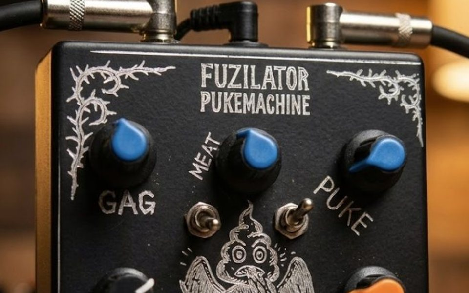

Haifa · instruments · tools · workshops
Instruments that are a bit wrong.
I'm Yaniv Schonfeld, a.k.a. Willbear. I build noise boxes, pocket instruments and strange software, and I teach people to build their own.
Most of it is open source. Some of it you can buy. All of it you can learn to make.
Launch week. Seven projects, one page. A video for each one is on its way: follow on Instagram or YouTube to catch them.
Things you can hold
Built by hand in Haifa. Ask and I'll tell you what's on the bench, or come and build one yourself.
1 board = 2 instruments
TWOFOLD and Samplooler run on the same ESP32 board. Flash it as one, flash it as the other. Build it in the ESP32 workshop and go home with both.
Things you can run
Free to download, free to change. On an old PC, a pocket handheld, a Raspberry Pi or your browser.
Workshops
Build an ESP32 instrument
7 meetings · MEZO, Haifa · 2,200 ₪ · kit included
A small computer becomes an instrument. Wire the screen, the knob and the sound, solder it, box it, and leave with a board that runs TWOFOLD and Samplooler.
The workshop Ask about datesBuild a guitar or bass pedal
8 meetings · MEZO, Haifa · 2,200 ₪ · kit included
From a handful of parts to a fuzz or distortion you made yourself: the circuit, the soldering, the enclosure.
The workshop Ask about datesSupport
The code, the circuits and the manuals stay free. Patreon is how they stay that way.
If something here made you a sound you like, or taught you how a thing works, chipping in a few dollars a month pays for the parts, the boards and the time.